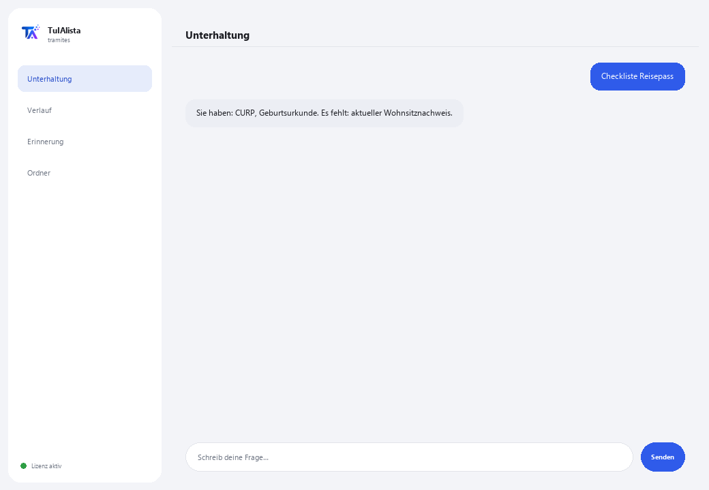

Agent für Behördengänge
Führt Sie Schritt für Schritt durch mexikanische Behördengänge und sagt Ihnen, welche Dokumente Sie haben und welche fehlen.
Was löst er und was brauchen Sie?
Ein schlecht vorbereiteter Behördengang bedeutet verlorene Zeit, Warteschlangen, Ablehnungen und manchmal Bußgelder. Dieser Agent organisiert Ihre persönlichen Dokumente, erstellt die Checkliste von dem, was Sie schon haben und was fehlt, und bereitet Sie vor, bevor Sie zur Behörde gehen.
- Sie brauchen: Ihren Lizenzschlüssel (TIA-XXXX-XXXX-XXXX-XXXX) und den Ordner mit Ihren persönlichen Dokumenten. Kein Python, keine technischen Kenntnisse.
- Erstes Ergebnis in weniger als 5 Minuten: Sie installieren, aktivieren, wählen Ihren Ordner und führen Dokumente aus, um zu sehen, was klassifiziert ist.
- Ihre Dokumente verlassen nie Ihren Computer — die Klassifizierung läuft lokal.
soporte@tuialista.com oder besuche tuialista.com/soporte — wir antworten normalerweise am selben Werktag.1 Was dieser Agent tut
Sie zeigen ihm den Ordner mit Ihren Dokumenten (Ausweise, Belege, Urkunden, Bescheinigungen) und er:
- Liest und klassifiziert sie nach Typ (mexikanischer Wählerausweis INE, CURP, RFC, Wohnsitznachweis, Geburtsurkunde usw.).
- Erstellt eine Checkliste des Behördengangs: welche Anforderungen Sie schon haben und welche fehlen.
- Erkennt bald ablaufende oder abgelaufene Dokumente (z. B. ein Wohnsitznachweis, der älter als 3 Monate ist).
- Erstellt einen Schritt-für-Schritt-Leitfaden des Behördengangs (Behörde, Anforderungen, ob online möglich, ungefähre Kosten und Zeiten).
- Beantwortet Ihre Fragen: “was brauche ich, um meinen Reisepass zu erneuern?”
Ergebnis: Sie erscheinen beim Behördengang mit allem in Ordnung und ohne Überraschungen.
2 Installation (2 Minuten)
Für Windows. Keine dauerhafte Internetverbindung nötig, nichts wird in die Cloud hochgeladen.
Laden Sie das Installationsprogramm von tuialista.com/descargar herunter (Behörden-Agent) und öffnen Sie es. Es erstellt eine Verknüpfung mit dem Logo auf Ihrem Desktop — kein Python oder Terminal erforderlich.
Doppelklicken Sie auf das neue Symbol. Fügen Sie Ihren Lizenzschlüssel ein (er wurde Ihnen beim Kauf per E-Mail zugesandt) und klicken Sie auf Aktivieren. Sie sehen ein grünes Häkchen, wenn er gültig ist.
Wählen Sie den Ordner mit Ihren persönlichen Dokumenten aus und klicken Sie auf Agent jetzt verwenden. Beim nächsten Mal startet er direkt — er merkt sich Ihren Schlüssel und Ihren Ordner.
3 So verwenden Sie ihn
Der Agent öffnet ein Chat-Fenster, wie eine Messaging-App — kein schwarzer Programmierer-Bildschirm. Sie schreiben Ihren Befehl oder Ihre Frage in das Textfeld unten, klicken auf Senden (oder Enter), und die Antwort erscheint als Nachricht, genau wie auf diesem echten Bild:

Die folgenden Befehle sind die Wörter, die Sie in dasselbe Textfeld eingeben können:
> DokumenteZusammenfassung Ihrer Dokumente, ihres erkannten Typs und ihres Status (gültig / bald ablaufend / abgelaufen).
> Checkliste <Behördengang>Für einen Behördengang (z. B. Reisepass, ine, rfc), welche Anforderungen Sie schon haben (und ob eine abgelaufen ist) und welche fehlen.
> Leitfaden <Behördengang>Vollständiger Leitfaden: Behörde, Dokumente, ob online möglich, Schritte, Tipps zur Vermeidung von Ablehnungen, ungefähre Kosten und Zeiten.
> fehlt <Behördengang>Nur das, was Ihnen für diesen Behördengang fehlt, und ob Sie etwas Abgelaufenes haben.
> AblaufdatenBald ablaufende oder abgelaufene Dokumente.
> BehördengängeKatalog der Behördengänge, die der Agent kennt (Reisepass, INE, RFC, CURP, Führerschein, Sozialversicherung, Geburtsurkunde, Steuerbescheinigung, elektronische Signatur...).
> freie Frage?Schreiben Sie jede Frage in natürlicher Sprache, z. B.: kann ich meinen CURP online beantragen?
> beendenBeendet die Sitzung (funktioniert auch mit exit).
4 Beispiele für häufige Anwendungen
Sich auf den Reisepass vorbereiten
Checkliste Reisepass → fehlt Reisepass — Sie sehen, welche Anforderungen Sie haben und was fehlt, bevor Sie einen Termin vereinbaren.
Vollständiger Leitfaden eines Behördengangs
Leitfaden urkunde
Bald ablaufende Dokumente prüfen
Ablaufdaten — Sie erkennen, ob Ihr Wohnsitznachweis aufgrund seines Alters nicht mehr gültig ist.
Eine punktuelle Frage
was brauche ich, um mich für den RFC zu registrieren?
5 Häufig gestellte Fragen
Werden meine Dokumente ins Internet hochgeladen?
Welche Formate akzeptiert er?
Erledigt er den Behördengang für mich oder plant er ihn?
Erstellt er offizielle Dokumente?
Wie klassifiziert er meine Dokumente?
Ist die Information zu Behördengängen immer aktuell?
In welcher Sprache antwortet er mir?
Liest er ein gescanntes PDF?
Kann ich den Ordner ändern?
Ist das offizielle Regierungsinformation?
6 Problemlösung
Ein .pdf oder .docx wird nicht gelesen
Ein Behördengang erscheint nicht
Zeigt “0 indizierte Dokumente”
Zeigt “Lizenz ungültig” oder fordert erneute Verbindung
“Keine KI-Anbieter konfiguriert”
Keine dieser Lösungen hat Ihr Problem behoben? Schreiben Sie uns direkt — wir schauen es uns gerne gemeinsam mit Ihnen an.
soporte@tuialista.com oder besuche tuialista.com/soporte — wir antworten normalerweise am selben Werktag.7 Datenschutz und Vertraulichkeit
Ihre persönlichen Dokumente verlassen nie Ihren Computer.
- Der Agent liest und klassifiziert die Dateien lokal, auf Ihrem eigenen Gerät. Er lädt sie auf keinen Server hoch und teilt sie mit keiner Behörde.
- Die Klassifizierung, die Checkliste und die Ablauferkennung erfolgen auf Ihrem Gerät.
- Das Einzige, was über das Internet läuft, ist: (1) eine Überprüfung, dass Ihre Lizenz aktiv ist — die Ihre Dokumente nicht enthält —, und (2) beim Erstellen eines Leitfadens oder einer Frage wird ein Ausschnitt (Dokumenttyp und Ihre Anfrage) an die KI-Engine gesendet, um die Antwort zu verfassen.